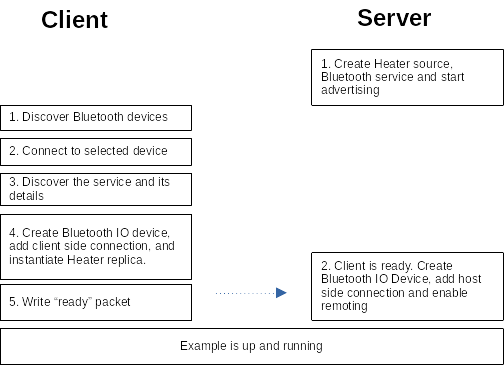
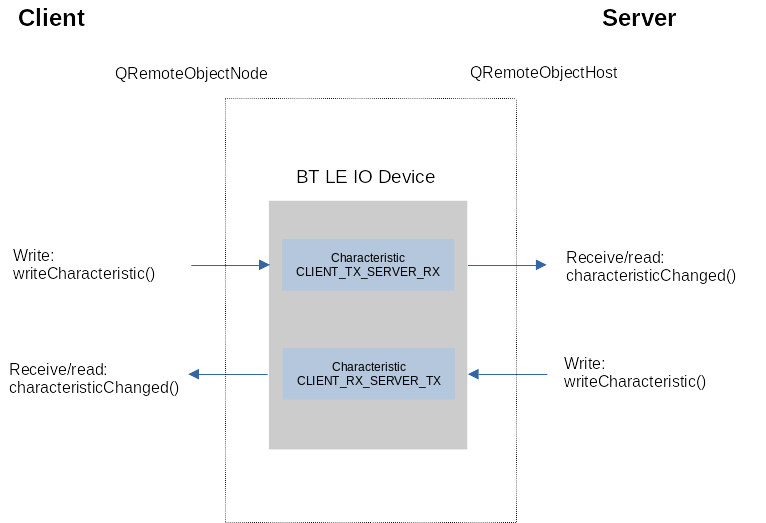

QtRemoteObjects Bluetooth LE Example
Using QtBluetooth Low Energy (BT LE or BLE for short) as a transport medium with Qt Remote Objects.
This is achieved by wrapping the bluetooth low energy transport logic in a QIODevice.
The example consists of a client and server application which communicate over the bluetooth low energy radio.
The server-side is a simple heater object which is either turned ON (heats) or OFF (cools). The temperature changes periodically and this temperature is shown by the client-side GUI. This changing temperature value flows from the server to client as remote object property. The client-side can control the ON/OFF status of the server-side heater object. This data flows similarly as a remote object property.
Overview
Bluetooth Low Energy is inherently a client/server architecture, where server advertises its services and client discovers them, after which the data can be transferred.
The following Figure illustrates the main steps when running the example:

Data flow
The data flows over the Bluetooth Low Energy medium. This is implemented with two GATT characteristics, one for each direction. This is illustrated by the following Figure:

Known limitations
The example relies on QLowEnergyController::connected() and QLowEnergyController::disconnected() signals to detect client connection and disconnection. These signals are not always reliable on the server (peripheral) side on all platforms. This is typically not a problem when connecting for the first time, but may be an issue on subsequent reconnections if the server is not restarted.